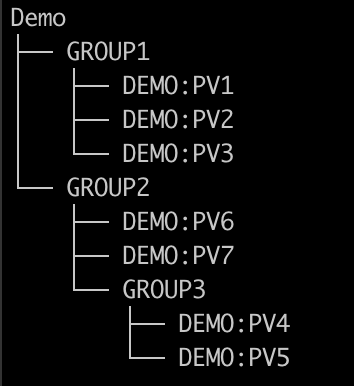

Demo
The following PV tree will be used for the demo:

We represent this tree with the configuration file in examples/demo/demo.xml.
<?xml version='1.0' encoding='utf8'?>
<config name="Demo">
<component name="GROUP1">
<pv name="DEMO:PV1">
<enabled>true</enabled>
<filter>DEMO:PV2 > 10</filter>
</pv>
<pv name="DEMO:PV2">
<enabled>true</enabled>
</pv>
<pv name="DEMO:PV3">
<enabled>true</enabled>
</pv>
</component>
<component name="GROUP2">
<component name="GROUP3">
<pv name="DEMO:PV4">
<enabled>true</enabled>
</pv>
<pv name="DEMO:PV5">
<enabled>true</enabled>
</pv>
</component>
<pv name="DEMO:PV6">
<enabled>true</enabled>
</pv>
<pv name="DEMO:PV7">
<enabled>true</enabled>
</pv>
</component>
</config>
Notice that DEMO:PV1 has an enabling filter based on the value of DEMO:PV2. This results in a disabled DEMO:PV1 for values of DEMO:PV2 less than or equal to ten.
This demo is intended for running on SLAC's RHEL7 dev server; however, this same demo can be executed on machines provided that an apropriate environment is sourced. NALMS uses named Docker containers and so this demo cannot be run if the existing demo containers are running. The commands below are run using the existing RHEL7 docker installation. Users must be added to the docker group in order to interact with the containers.
For client use: $NALMS_CLIENT_JAR must be defined as well as $NALMS_HOME. The client launch script creates a templated configuration file for the client from a template provided in $NALMS_HOME.
If running...
If the service containers have already been deployed, you can access cruise control at: http://localhost:9090, the Grafana instance at: http://localhost:3000, and launch the client using:
$ source /afs/slac/g/lcls/tools/script/ENVS64.bash
$ source ${PACKAGE_TOP}/nalms/setup/aird-b50-srv01/demo.env
$ nalms start-phoebus-client Demo
From scratch
During this demo, we set up all services using the package CLI and the Docker images. On aird-b50-srv01, this can be sourced using:
$ source /afs/slac/g/lcls/tools/script/ENVS64.bash
$ source ${PACKAGE_TOP}/nalms/setup/aird-b50-srv01/demo.env
Demo IOC
Start the demo ioc:
$ tmux new -s demo-ioc
$ softIoc -d ${NALMS_HOME}/examples/demo/demo.db
Exit the tmux window using: Ctr + b + d
Alarm IOC
For integration with edm/pydm displays etc., we can use the nalms cli to generate an alarm ioc for a given configuration. In this demo, we will use application name nalmsDemo, IOC name demo.
$ source $EPICS_SETUP/epicsenv-7.0.3.1-1.0.bash
$ nalms build-alarm-ioc nalmsDemo demo Demo ${NALMS_HOME}/examples/demo/demo.xml rhel7-x86_64
$ cd nalmsDemo
$ make
$ cd iocBoot/iocdemo
$ tmux new -s demoAlarmIOC # run in a new window
$ ../../bin/rhel7-x86_64/nalmsDemo st.cmd
$ dbl
Exit the tmux window using: Ctr + b + d
Kafka Cluster
Set up Kafka cluster (from repo root):
$ nalms start-zookeeper
$ nalms start-kafka-broker --broker 0
Cruise Control
Start cruise-control:
$ nalms start-cruise-control
Navigate to http://localhost:9090 to view the Cruise Control interface and monitors of the Kafka cluster.
Phoebus Alarm Server
Start the Phoebus alarm server: (Note: launch requires the absolute path of the configuration file for docker volume mount)
$ nalms start-alarm-server Demo ${NALMS_HOME}/examples/demo/demo.xml --alarmioc true
Elasticsearch
Next, start the Elasticsearch service:
$ nalms start-elasticsearch
Phoebus Alarm Logger
Wait at least a minute before starting the Phoebus alarm logger. The templates for the indices must be created before starting. Start the Phoebus alarm logger:
$ nalms start-alarm-logger Demo ${NALMS_HOME}/examples/demo/demo.xml
Grafana
Now we'll add the configuration to be handled with Grafana. Add the Grafana datasource to the file:
$ nalms add-grafana-datasource Demo
This appended the datasource to the file datasource.yml. Now, create the Grafana dashboard:
$ nalms build-grafana-dashboard Demo
This created a dashboard for the Demo configuration in $NALMS_GRAFANA_DASHBOARD_DIR. Launch the Grafana instance:
$ nalms start-grafana
Launch firefox and navigate to http://localhost:3000. Select AlarmLogs from the available dashboards.
Phoebus Client
Launch the Phoebus client
$ nalms start-phoebus-client Demo
Navigate to Applications > Alarm > Alarm Tree to view the process variable values. Navigate to Applications > Alarm > Alarm Log
Inspect
To inspect the Docker containers run:
$ docker ps # to list container ids
$ docker stats {CONTAINER_ID}
Cleanup
All containers may be stopped using the ids listed with:
$ docker ps
$ docker stop {containter_id}
Remove lingering containers...
$ docker container rm {container_id}
You can access and exit the demo ioc by attaching to the tmux session:
$ tmux attach -t demo-ioc
Exiting:
$ > exit
$ exit
And the alarm ioc:
$ tmux attach -t demoAlarmIoc
Exiting:
$ > exit
$ exit